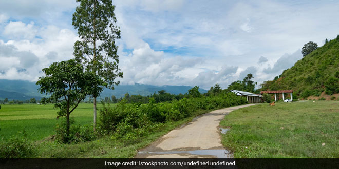

About Chitokhar
Chitokhar is a small Village/hamlet in Tekari Block in Gaya District of Bihar State,India.
It comes under Chitokhar Panchayath and belongs to Magadh Division
and is located 38 KM towards North from District head quarters
Gaya.
10
KM from
Tekari. 82 KM from State capital Patna
Chitokhar Pin code is 824235 and postal head office is Mow .
Kespa ( 5 KM ) , Chaita ( 6 KM ) , Mau ( 6 KM ) , Dihura ( 6 KM ) , Lodipur ( 7 KM ) are the nearby Villages to Chitokhar.
Chitokhar is surrounded by Tekari Block towards South , Sonbhadra-Bansi-Surajpur Block towards North ,
Ratni
Faridpur
Block towards North , Konch Block towards South .
Makhdumpur , Jehanabad , Rafiganj , Gaya are the near by Cities to Chitokhar.
Chitokhar Local Language is Magahi.
Village literacy rate is 53.8% and the Female Literacy rate is 19.4%.
|
 |